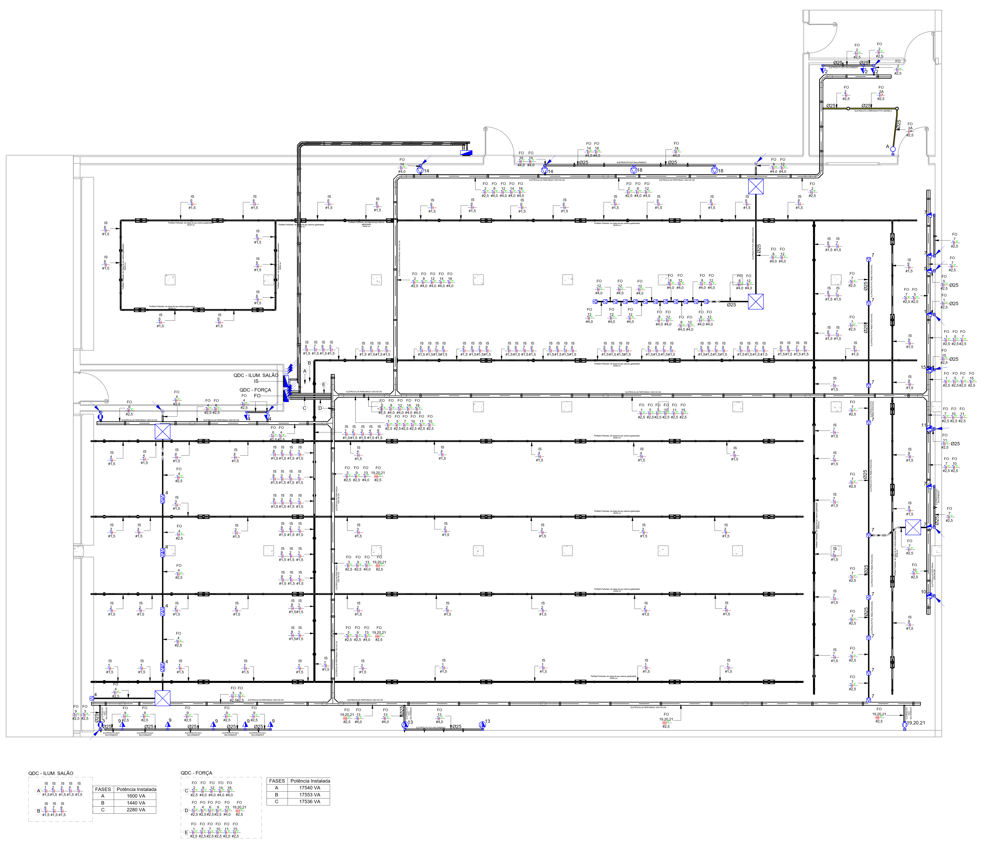
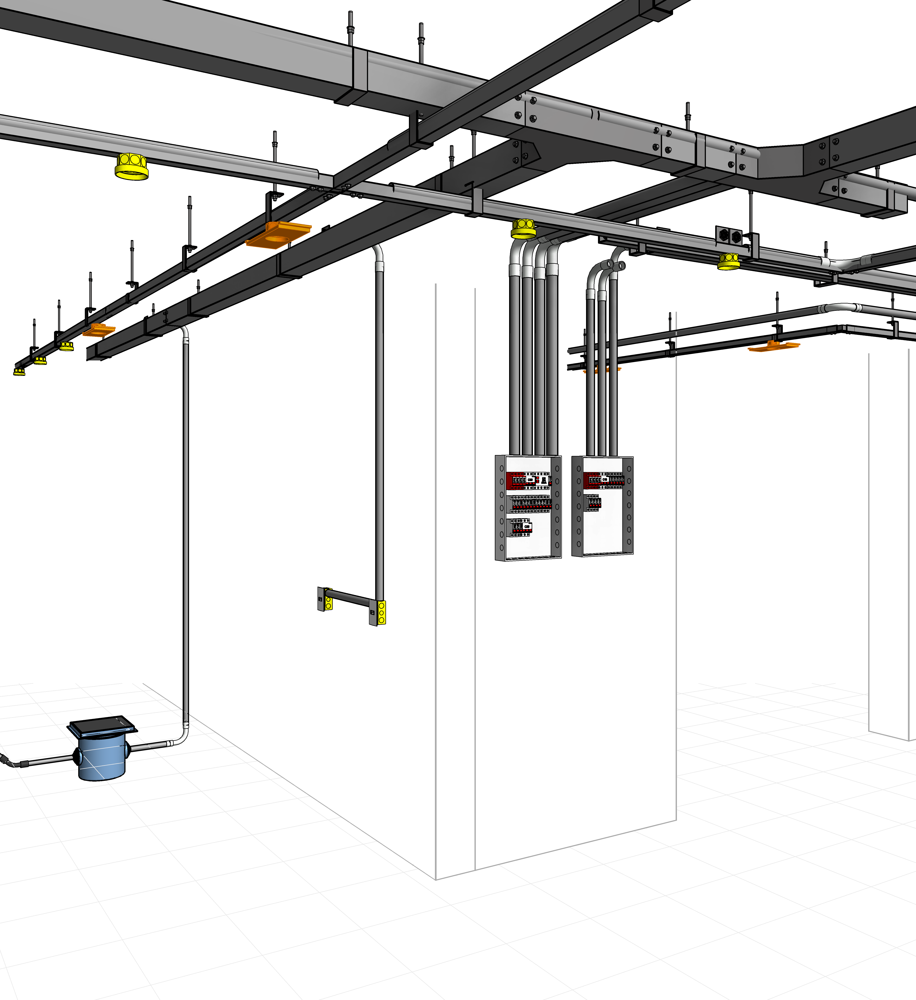
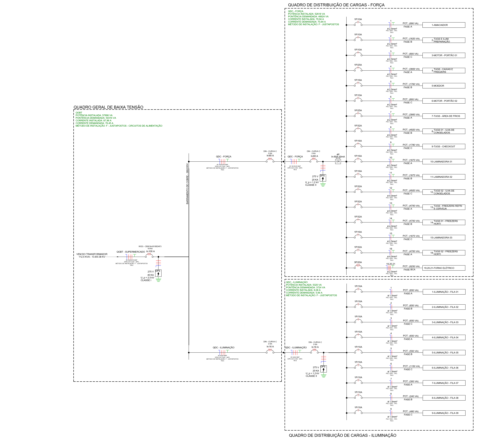
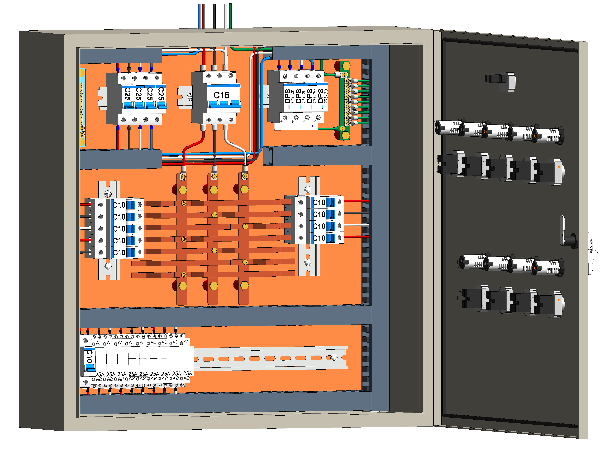

Levantamento de cargas
Identificação e organização das cargas elétricas do supermercado, incluindo equipamentos de refrigeração, freezers, balcões refrigerados, iluminação, tomadas, climatização, panificação e áreas administrativas.
Desenvolvimento de projeto elétrico em baixa tensão para supermercado, contemplando levantamento de cargas, dimensionamento de circuitos, quadros elétricos, alimentadores, iluminação, tomadas, proteção elétrica e documentação técnica conforme as normas aplicáveis.
Solicitar ProjetoA VK Serviços de Engenharia e Consultoria foi responsável pelo desenvolvimento do projeto elétrico de um supermercado, considerando as particularidades de uma instalação comercial com grande variedade de cargas, operação contínua e equipamentos essenciais ao funcionamento do empreendimento.
O projeto foi elaborado com foco na segurança das pessoas, proteção dos equipamentos, organização dos circuitos elétricos e confiabilidade da instalação. Foram avaliadas cargas de iluminação, tomadas, equipamentos de refrigeração, panificação, climatização, caixas, estoque, áreas administrativas e demais setores do supermercado.
Todo o dimensionamento foi desenvolvido com base em critérios técnicos de capacidade de condução de corrente, queda de tensão, proteção contra sobrecarga, curto-circuito e seccionamento adequado dos circuitos.

Supermercado / comércio varejista
Baixa tensão, alimentação trifásica
ABNT NBR 5410 - Instalações elétricas de baixa tensão
Projeto elétrico, memoriais, diagramas e ART
Identificação e organização das cargas elétricas do supermercado, incluindo equipamentos de refrigeração, freezers, balcões refrigerados, iluminação, tomadas, climatização, panificação e áreas administrativas.
Definição dos circuitos terminais e alimentadores, considerando corrente de projeto, método de instalação, agrupamento, temperatura, queda de tensão e capacidade de condução dos condutores.
Elaboração dos quadros elétricos, separação dos circuitos por setor, definição dos disjuntores, barramentos, dispositivos de proteção e identificação dos circuitos.
Desenvolvimento dos diagramas unifilares com indicação dos alimentadores, proteções, seções dos cabos, corrente nominal dos dispositivos e principais características da instalação.
Distribuição dos pontos de iluminação nas áreas de venda, estoque, circulação, áreas técnicas, administração e apoio, buscando conforto visual e eficiência energética.
Definição dos pontos de tomadas conforme a necessidade de cada ambiente, separando circuitos de uso geral e circuitos dedicados para equipamentos específicos.
Dimensionamento dos dispositivos de proteção contra sobrecorrente, curto-circuito e choques elétricos, incluindo disjuntores, DR e DPS, quando aplicável.
Entrega das plantas elétricas, quadros de cargas, diagramas, memoriais descritivos, memoriais de cálculo e Anotação de Responsabilidade Técnica.
Em supermercados, a instalação elétrica precisa atender cargas de diferentes naturezas, muitas delas funcionando por longos períodos e com necessidade de alta confiabilidade. Por isso, o projeto foi separado por setores, facilitando a operação, manutenção e futuras ampliações.
Análise da arquitetura, identificação dos ambientes, equipamentos previstos e necessidades operacionais do supermercado.
Organização das potências instaladas, definição dos fatores de demanda e separação das cargas por quadro e por setor.
Cálculo dos condutores, eletrodutos, dispositivos de proteção, alimentação dos quadros e verificação de queda de tensão.
Elaboração das plantas elétricas com distribuição dos pontos, circuitos, eletrodutos, quadros e detalhes de instalação.
Finalização dos memoriais, diagramas, quadros de cargas, lista de materiais e emissão da ART do projeto.
Proteções adequadas para pessoas, equipamentos e instalação.
Circuitos separados por setores, facilitando manutenção e operação.
Dimensionamento compatível com as cargas essenciais do supermercado.
Projeto elaborado conforme critérios técnicos e normas aplicáveis.




Desenvolvemos projetos elétricos comerciais, industriais e residenciais, com foco em segurança, desempenho, documentação técnica e atendimento às normas brasileiras.
Fale Conosco pelo WhatsApp